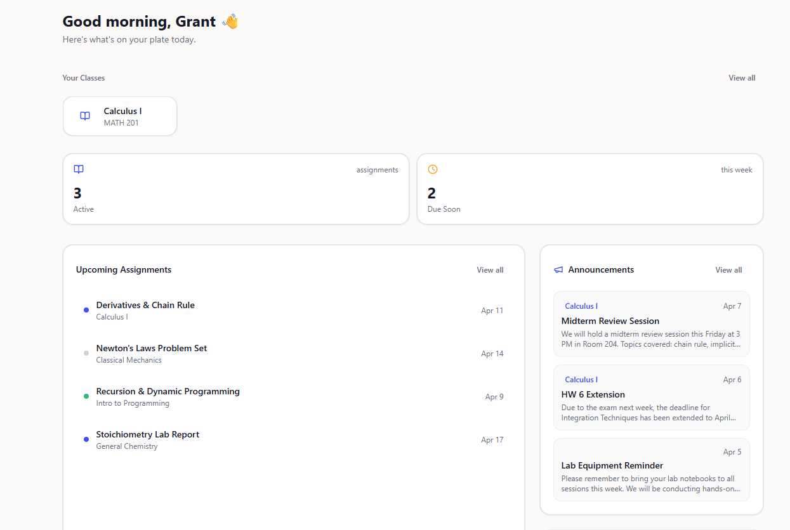

Students use AI before the final submission
By the time work is graded, the important question is no longer only whether AI was used. It is whether the student learned while using it.
AI in the homework workflow
MyTA brings guided AI into assignments instead of treating AI as something to detect after submission. Students get course-aware help during the work process, and instructors see where AI is used, where students struggle, and what needs attention.

The real problem
By the time work is graded, the important question is no longer only whether AI was used. It is whether the student learned while using it.
Bans are hard to enforce, and detection tools react after the work is finished. Neither shows where students got stuck or how they reasoned through the assignment.
When students leave the course environment for AI help, instructors lose the learning data that could help them teach the next class better.
What MyTA changes
MyTA is not only an AI tutor. It is a course workflow layer for using AI with structure, context, and visibility.
Students receive help during assignments, when guidance can still shape their thinking. The system supports next steps without handing over final answers.
Instructors can understand how students are using AI, which concepts cause confusion, and where help-seeking patterns appear across the class.
Course materials, assignment directions, and instructor-approved guidance shape the help students receive.
MyTA is designed to fit into existing LMS workflows first, then consolidate simple course tasks that currently live across disconnected tools.
Workflow
Add materials, assignment directions, and boundaries for what kind of AI help is allowed.
AI support sits in the work process, so students get help while they are still reasoning through the task.
Confusion, help-seeking, and reasoning signals give instructors a clearer view than final answers alone.
Why it matters
MyTA makes AI use more transparent while students are still doing the work.
It helps instructors identify confusion earlier, before patterns are hidden inside final submissions.
It gives universities a practical path beyond bans, detection tools, and scattered external AI use.
Market context
See the product